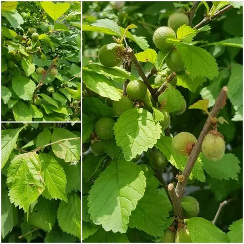

灌木与花木 · 植物界
榆叶梅 Prunus triloba

中国北方常见的早春观花灌木，叶片像榆叶、花朵似梅花，花期繁花满枝，是庭院与街道绿化的常见树种。
- 分类
- 门被子植物门纲木兰纲目蔷薇目科蔷薇科属李属
- 栖息环境
- 海拔 1500 米以下的山坡、灌丛与庭院，喜光耐寒耐旱
- 地理分布
- 中国河北、山西、山东、辽宁等地，全国各地广泛栽培
- 保护级别
- 暂无评估；中国未列入国家重点保护野生植物名录
物种志
榆叶梅为落叶灌木或小乔木，高可达 5 m，树皮灰褐色，小枝紫褐色；叶片宽椭圆形至倒卵形，边缘具粗重锯齿，叶面粗糙、形似榆叶，故得名。花期 3–4 月，先花后叶，花单生或 2 朵并生于叶腋，花径 2–3 cm，粉色至紫红色，重瓣品种常见；核果近球形，成熟时红色，果肉薄。
榆叶梅原产中国北部，河北、山西、山东、辽宁等地常见，中国各地广泛栽培，喜光、耐寒、耐旱，适宜深厚肥沃、排水良好的土壤。早春满枝繁花，粉红如霞，是北方城市春季最早开花的观赏灌木之一，常栽植于庭院、公园与街道绿地；重瓣品种花形更饱满，观赏价值更高。核果可食但果肉薄，种子可榨油，枝条可入药。榆叶梅与桃花、梅花花期相近，但叶片具粗重锯齿、叶面粗糙，是其重要特征。
形态与习性
- 株高可达 5 m，小枝紫褐色
- 花期3–4 月，先花后叶
- 果期6–7 月，核果成熟时红色
- 光照喜光，不耐长期荫蔽
- 水分耐旱，怕积水
- 土壤深厚肥沃、排水良好的壤土
- 主要用途庭院与街道观赏、种子榨油、枝条入药
趣味知识
- 榆叶梅的叶片像榆树叶、花朵似梅花，因此得名“榆叶梅”。
- 榆叶梅是北方最早开花的观赏灌木之一，3 月就能开满粉红花朵。
- 榆叶梅的重瓣品种花形饱满，观赏价值比单瓣品种更高。
- 榆叶梅叶片边缘有粗重锯齿、叶面粗糙，与桃花、梅花容易区分。